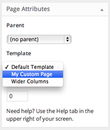

Page Templates
Topics
- Uses for Page Templates
- Page Templates within the Template Hierarchy
- Page Templates Purpose & User Control
- File Organization of Page Templates
- Creating Custom Page Templates for Global Use
- Creating a Custom Page Template for One Specific Page
- Creating page templates for specific post types
- Using Conditional Tags in Page Templates
- Identifying a Page Template
- Page Template Functions
Page templates are a specific type of template file that can be applied to a specific page or groups of pages.
Note: As of WordPress 4.7 page templates support all post types. For more details how to set a page template to specific post types see example below.
Since a page template is a specific type of template file, here are some distinguishing features of page templates:
- Page templates are used to change the look and feel of a page.
- A page template can be applied to a single page, a page section, or a class of pages.
- Page templates generally have a high level of specificity, targeting an individual page or group of pages. For example, a page template named
page-about.phpis more specific than the template filespage.phporindex.phpas it will only affect a page with the slug of “about.” - If a page template has a template name, WordPress users editing the page have control over what template will be used to render the page.
Uses for Page Templates Uses for Page Templates
Page templates display your site’s dynamic content on a page, e.g., posts, news updates, calendar events, media files, etc. You may decide that you want your homepage to look a specific way, that is quite different to other parts of your site. Or, you may want to display a featured image that links to a post on one part of the page, have a list of latest posts elsewhere, and use a custom navigation. You can use page templates to achieve these things.
This section shows you how to build page templates that can be selected by your users through their admin screens.
For example, you can build page templates for:
- full-width, one-column
- two-column with a sidebar on the right
- two-column with a sidebar on the left
- three-column
Page Templates within the Template Hierarchy Page Templates within the Template Hierarchy
When a person browses to your website, WordPress selects which template to use for rendering that page. As we learned earlier in the Template Hierarchy, WordPress looks for template files in the following order:
- Page Template — If the page has a custom template assigned, WordPress looks for that file and, if found, uses it.
page-{slug}.php— If no custom template has been assigned, WordPress looks for and uses a specialized template that contains the page’s slug.page-{id}.php— If a specialized template that includes the page’s slug is not found, WordPress looks for and uses a specialized template named with the page’s ID.page.php— If a specialized template that includes the page’s ID is not found, WordPress looks for and uses the theme’s default page template.singular.php— Ifpage.phpis not found, WordPress looks for and uses the theme’s template used for a single post, irregardless of post type.index.php— If no specific page templates are assigned or found, WordPress defaults back to using the theme’s index file to render pages.
Alert: There is also a WordPress-defined template named paged.php. It is not used for the page post-type but rather for displaying multiple pages of archives.
Page Templates Purpose & User Control Page Templates Purpose & User Control
If you plan on making a custom page template for your theme, you should decide a couple of things before proceeding:
- Whether the page template will be for one specific page or for any page; and
- What type of user control you want available for the template.
Every page template that has a template name can be selected by a user when they create or edit a page. The list of available templates can be found at Pages > Add New > Attributes > Template. Therefore, a WordPress user can choose any page template with a template name, which might not be your intention.
For example, if you want to have a specific template for your “About” page, it might not be appropriate to name that page template “About Template” as it would be globally available to all pages (i.e. the user could apply it to any page). Instead, create a single use template and WordPress will render the page with the appropriate template, whenever a user visits the “About” page.
Conversely, many themes include the ability to choose how many columns a page will have. Each of these options is a page template that is available globally. To give your WordPress users this global option, you will need to create page templates for each option and give each a template name.
Dictating whether a template is for global use vs. singular use is achieved by the way the file is named and whether or not is has a specific comment.
Note: Sometimes it is appropriate to have a template globally available even if it appears to be a single use case. When you’re creating themes for release, it can be hard to predict what a user will name their pages. Portfolio pages are a great example as not every WordPress user will name their portfolio the same thing or have the same page ID and yet they may want to use that template.
File Organization of Page Templates File Organization of Page Templates
As discussed in Organizing Theme Files, WordPress recognizes the subfolder page-templates. Therefore, it’s a good idea to store your global page templates in this folder to help keep them organized.
Alert: A specialized page template file (those created for only one time use) cannot be in a sub-folder, nor, if using a Child Theme, in the Parent Theme’s folder.
Creating Custom Page Templates for Global Use Creating Custom Page Templates for Global Use
Sometimes you’ll want a template that can be used globally by any page, or by multiple pages. Some developers will group their templates with a filename prefix, such as page_two-columns.php
Alert: Important! Do not use page- as a prefix, as WordPress will interpret the file as a specialized template, meant to apply to only one page on your site.
For information on theme file-naming conventions and filenames you cannot use, see reserved theme filenames.
Tip: A quick, safe method for creating a new page template is to make a copy of page.php and give the new file a distinct filename. That way, you start off with the HTML structure of your other pages and you can edit the new file as needed.
To create a global template, write an opening PHP comment at the top of the file that states the template’s name.
<?php /* Template Name: Example Template */ ?>
It’s a good idea to choose a name that describes what the template does as the name is visible to WordPress users when they are editing the page. For example, you could name your template Homepage, Blog, or Portfolio.
This example from the TwentyFourteen theme creates a page template called Full Width Page:
<?php /** * Template Name: Full Width Page * * @package WordPress * @subpackage Twenty_Fourteen * @since Twenty Fourteen 1.0 */
Once you upload the file to your theme’s folder (e.g., page-templates), go to the Page > Edit screen in your admin dashboard.
On the right hand side under attributes you'll see template. This is where users are able to access your global page templates.
Tip: The select list has a maximum width of 250px, so longer names may be cut off.
Creating a Custom Page Template for One Specific Page Creating a Custom Page Template for One Specific Page
As mentioned in the Template Hierarchy page, you can create a template for a specific page. To create a template for one specific page, copy your existing page.php file and rename it with your page’s slug or ID:
page-{slug}.phppage-{ID}.php
For example: Your About page has a slug of ‘about’ and an ID of 6. If your active theme’s folder has a file named page-about.php or page-6.php, then WordPress will automatically find and use that file to render the About page.
To be used, specialized page templates must be in your theme’s folder (i.e. /wp-content/themes/my-theme-name/ ).
Creating page templates for specific post types Creating page templates for specific post types
By default, a custom page template will be available to the “page” post type.
To create a page template to specific post types, add a line under the template name with the post types you would like the template to support.
Example:
<?php /* Template Name: Full-width layout Template Post Type: post, page, event */ // Page code here...
Alert: This ability to add page templates to post types other than “page” post type is supported only from WordPress 4.7
When at least one template exists for a post type, the ‘Post Attributes’ meta box will be displayed in the back end, without the need to add post type support for ‘page-attributes’ or anything else. The ‘Post Attributes’ label can be customzied per post type using the ‘attributes’ label when registering a post type.
Backward Compatibility:
Let’s say you want to publicly release a theme with support for post type templates. WordPress versions before 4.7 will ignore the Template Post Type header and show the template in the list of page templates, even though it only works for regular posts. To prevent that, you can hook into the theme_page_templates filter to exclude it from the list. Here’s an example:
/**
* Hides the custom post template for pages on WordPress 4.6 and older
*
* @param array $post_templates Array of page templates. Keys are filenames, values are translated names.
* @return array Filtered array of page templates.
*/
function makewp_exclude_page_templates( $post_templates ) {
if ( version_compare( $GLOBALS['wp_version'], '4.7', '<' ) ) {
unset( $post_templates['templates/my-full-width-post-template.php'] );
}
return $post_templates;
}
add_filter( 'theme_page_templates', 'makewp_exclude_page_templates' );
That way you can support custom post type templates in WordPress 4.7 and beyond while maintaining full backward compatibility.
Note that theme_page_templates is actually a dynamic theme_{$post_type}_templates filter. The dynamic portion of the hook name, $post_type, refers to the post type supported by the templates. E.g. you can hook into theme_product_templates to filter the list of templates for the product post type.
Using Conditional Tags in Page Templates Using Conditional Tags in Page Templates
You can make smaller, page-specific changes with Conditional Tags in your theme’s page.php file. For instance, the below example code loads the file header-home.php for your front page, but loads another file (header-about.php) for your About page, and then applies the default header.php for all other pages.
if ( is_front_page() ) : get_header( 'home' ); elseif ( is_page( 'About' ) ) : get_header( 'about' ); else: get_header(); endif;
You can learn more about Conditional Tags here.
Identifying a Page Template Identifying a Page Template
If your template uses the body_class() function, WordPress will print classes in the body tag for the post type class name (page), the page’s ID (page-id-{ID}), and the page template used. For the default page.php, the class name generated is page-template-default:
<body class="page page-id-6 page-template-default">
Note: A specialized template (page-{slug}.php or page-{ID}.php) also gets the page-template-default class rather than its own body class.
When using a custom page template, the class page-template will print, along with a class naming the specific template. For example, if your custom page template file is named as follows:
<?php /* Template Name: My Custom Page */ ?gt;
Then then rendered HTML generated will be as follows:
<body class="page page-id-6 page-template page-template-my-custom-page-php">
Notice the page-template-my-custom-page-php class that is applied to the body tag.
Page Template Functions Page Template Functions
These built-in WordPress functions and methods can help you work with page templates:
get_page_template()returns the path of the page template used to render the page.wp_get_theme()->get_page_templates()returns all custom page templates available to the currently active theme (get_page_templates()is a method of theWP_Themeclass).is_page_template()returns true or false depending on whether a custom page template was used to render the page.get_page_template_slug()returns the value of custom field_wp_page_template(nullwhen the value is empty or “default”).If a page has been assigned a custom template, the filename of that template is stored as the value of a custom field named'_wp_page_template'(in thewp_postmetadatabase table). (Custom fields starting with an underscore do not display in the edit screen’s custom fields module.)